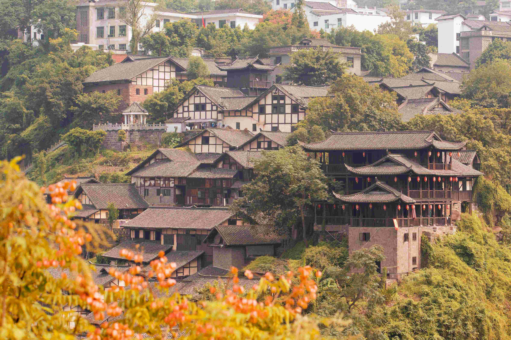
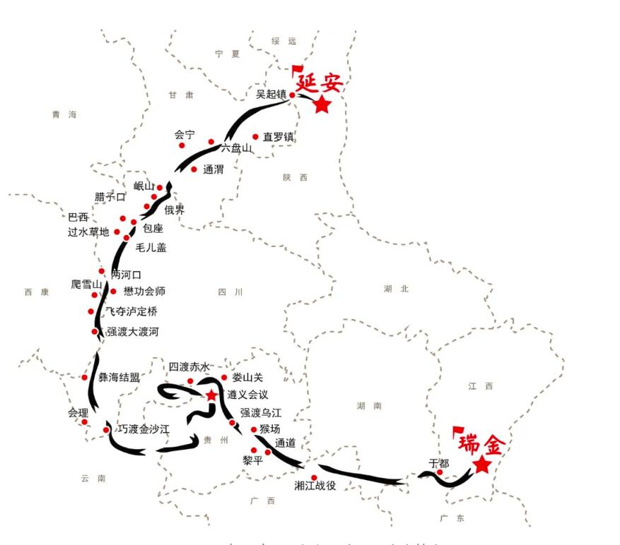
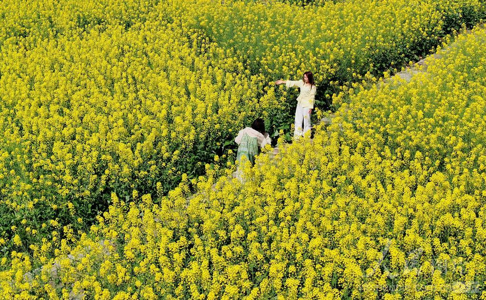
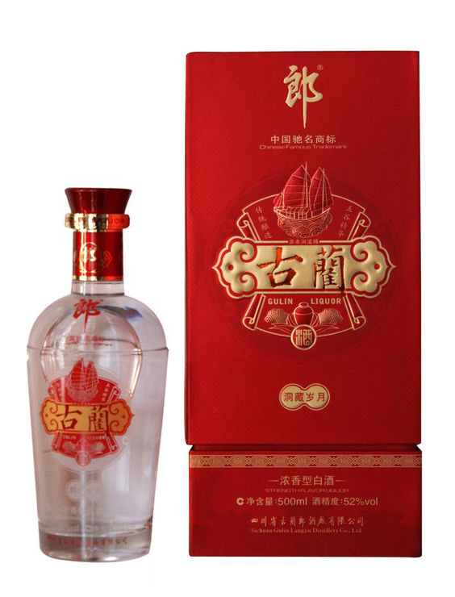
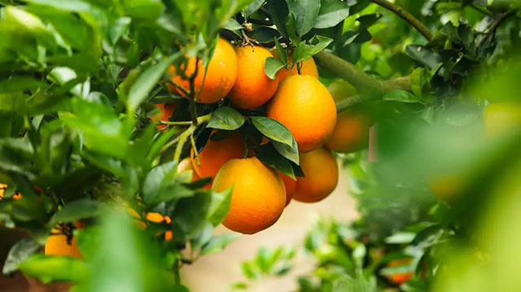
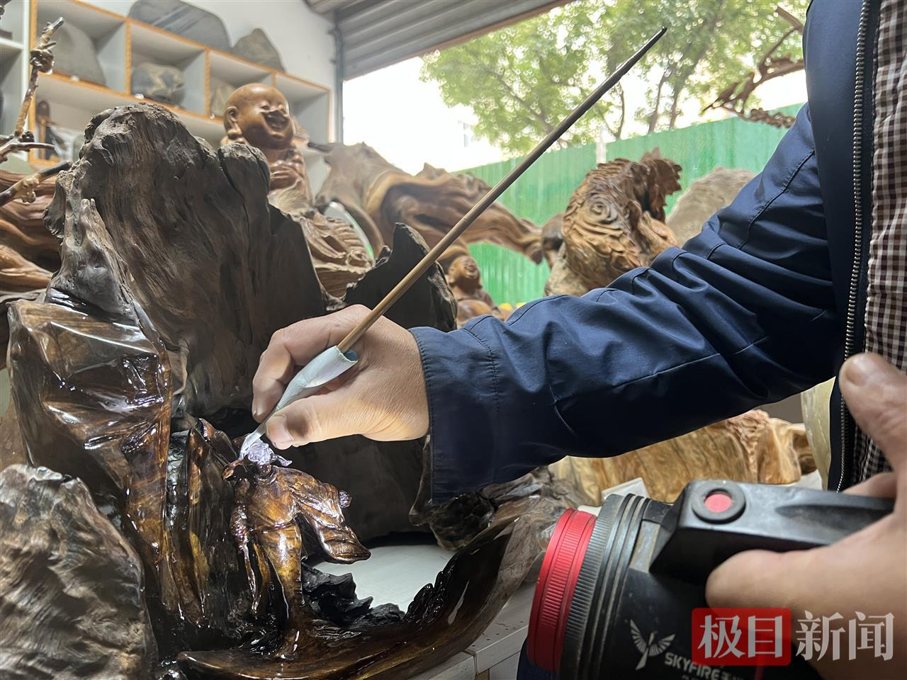
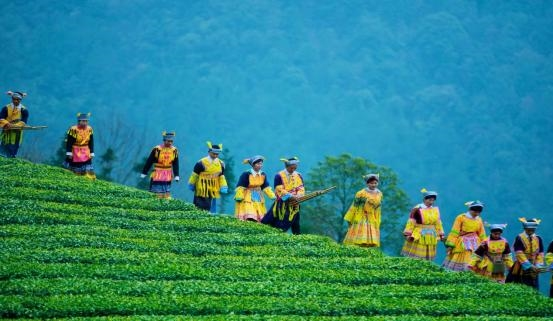

★
重走长征路 · 古蔺
四渡赤水 · 转战54天 · 红色基因永续
点击任意位置 · 进入体验
四渡赤水 · 转战54天 · 红色基因永续
点击任意位置 · 进入体验
四渡赤水 · 转战54天 · 红色基因永续
中央红军长征途中三进古蔺，在太平渡、二郎滩两度往返，
以灵活机动的战略战术，写下了中国革命史上最精彩的一页。
1935年1月至3月，中央红军在古蔺境内三进三出，转战54天，足迹遍及23个乡镇。 四渡赤水战役被誉为毛泽东军事指挥艺术的“得意之笔”。
红军以不足一个团的兵力，背水一战击溃敌军两个团，创造了以少胜多的经典战例。
红军在太平渡架设浮桥3座，渡河兵力1.2万人，完成二渡赤水，挥师东进重入贵州。
红军在双沙镇设立总司令部，驻扎7天，指挥了著名的四渡赤水战役。
“红军来的时候，我才十七岁。他们借我家门板架浮桥，临走时还留了张字条，说‘日后一定归还’。 后来红军真的回来了，门板上刻满了印记。父亲说，这是红军讲信用的证据。”
—— 据古蔺太平渡老船工口述史料整理
八十九载光阴流转，赤水河依旧奔涌向前。
今天的古蔺，以另一种方式续写着红色的传奇。
古蔺把红色基因融入了新时代的每一寸土地。 今天，它是一座没有围墙的红色博物馆，也是一座让人流连忘返的美食之城。

国家AAAA级旅游景区，没有围墙的红色博物馆

全长26公里，徒步体验红军长征路
网红玻璃观景台，万只候鸟越冬地

连续16届，累计游客超30万人次
古法卤制，麻辣鲜香，古蔺待客头道菜
全国赶黄草地理认证产区，药食同源
本地优良猪种，老腊肉远近闻名
筋道爽滑，古蔺人早餐桌上的常客

赤水河畔二郎镇，中国两大酱香白酒之一

赤水河谷孕育，皮薄多汁酸甜适口
国家级非遗，花灯之乡的活态传承

依形就势，古朴自然的传统美术

苗乡文化、非遗活化、生态茶园四位协同
点击地图上的地标，点亮红色遗址，了解历史故事，获取红色积分。 每点亮一个地标，积1分；集满5分，可解锁专属纪念海报与云认养资格。
用你的红色积分，认养一棵赤水河畔的甜橙树。 见证它从开花到结果，收获一份来自古蔺的甜蜜。
带着你点亮的红色足迹，生成一张专属纪念海报。 让红色基因，在数字时代继续传承。
如果你对“重走长征路 · 古蔺”这个作品有任何建议、想法或鼓励，欢迎留下你的留言。